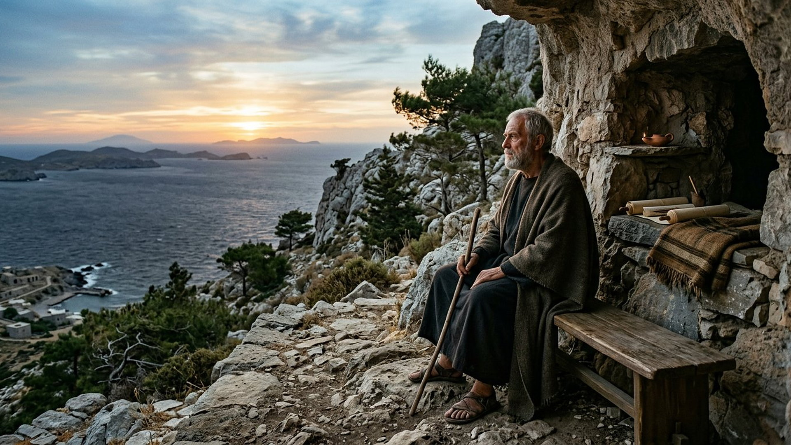
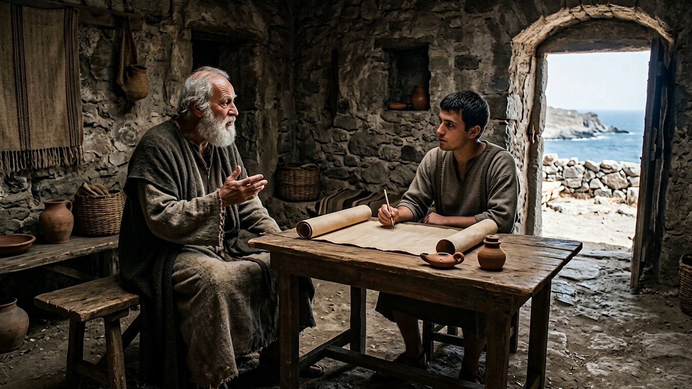
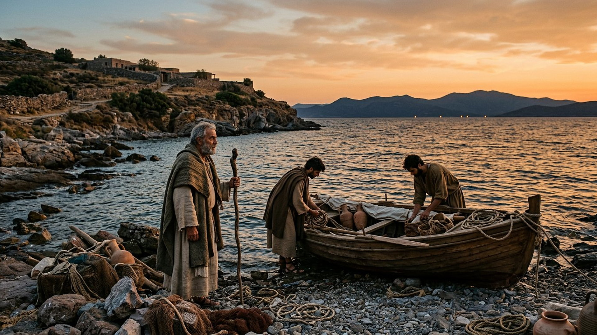

Salle 63 — Révélation 1 ACCOMPLIE
Jean à Patmos : la Révélation reçue
« Moi Jean, votre frère […], je me trouvai dans l’île appelée Patmos, à cause de la parole de Dieu et du témoignage de Jésus. » — Révélation 1:9 (d’après Segond 1910)
Reconstitution numérique — Patmos au matin : la tradition place sur cette hauteur la grotte dite de l’Apocalypse, identifiée et débattue ci-dessous.
Un exilé, une île, un livre qui va partir
La Révélation — en grec, translittération : Apokálypsis, « dévoilement » — s’ouvre sur une signature inhabituelle : « moi, Jean, votre frère et qui ai part avec vous à l’affliction », relégué « dans l’île appelée Patmos, à cause de la parole de Dieu et du témoignage de Jésus » (1:9). De ce séjour forcé dans une petite île rocheuse de la mer Égée naît le dernier livre de la Bible : une voix, entendue « le jour du Seigneur », ordonne d’écrire ce qui est vu et de l’envoyer à sept assemblées d’Asie mineure. Dans la lecture retenue par ce musée, Patmos n’est pas un décor mais la situation même du livre : un témoin écarté des routes, à qui l’on refuse la parole publique, devient l’auteur d’un écrit adressé aux communautés du continent tout proche — la contrainte transformée en correspondance.
La salle raconte ce point de départ sans reconstituer les visions elles-mêmes, traitées dans d’autres salles (23, 31 à 34, 36 et 37). L’identité exacte de ce Jean, la date de son exil et le lieu précis de la grotte vénérée à Patmos sont présentés ci-dessous avec leurs débats anciens et modernes.
Le récit en cinq temps
De l’île d’exil à l’envoi du livre, avancez d’une station à l’autre.

Le banc des preuves : une grotte de mémoire, un Jean débattu
DÉBATTU
La grotte de l’Apocalypse à Patmos : mémoire byzantine, lieu débattu (EV-72)
À mi-hauteur de l’île de Patmos, la grotte dite de l’Apocalypse, intégrée au centre historique de Chora (translittération : Khṓra) avec le monastère Saint-Jean fondé à la fin du XIᵉ siècle, est inscrite au patrimoine mondial depuis 1999 pour cet ensemble monastique et son vieux bourg. Vérifié : le lieu concentre depuis le Moyen Âge la mémoire du séjour de Jean, dans un paysage égéen conforme au cadre du texte — une petite île face aux côtes d’Asie mineure. Débattu : aucun témoignage du Iᵉʳ siècle ne localise la grotte ni même le point de débarquement, et l’identification repose sur la tradition locale. La salle la présente comme un lieu de mémoire, non comme une adresse prouvée, et l’illustration choisit la vue sur la mer plutôt que tout aménagement postérieur.
LECTURE PROPHÉTIQUE
« Heureux celui qui lit » : un livre fait pour circuler
La Révélation est le seul livre biblique qui bénit d’emblée son lecteur et ses auditeurs (1:3) et qui se conclut en interdisant de le sceller : « ne scelle point les paroles de la prophétie de ce livre, car le temps est proche » (22:10). Le musée retient cette mécanique d’envoi : écrit par un exilé sur une île, le texte est conçu dès sa première page comme une lettre à transporter, lire à voix haute dans les assemblées et copier. Sa transmission ancienne — présente dans les grandes Bibles grecques du IVᵉ siècle — prolonge exactement ce programme.
DÉBATTU
Quel Jean, sous quel empereur ?
La tradition ancienne, représentée dès la fin du IIᵉ siècle par Irénée de Lyon (translittération : Eirēnaîos), identifie l’auteur à Jean, fils de Zébédée, l’un des Douze, et place la vision « vers la fin du règne de Domitien » (translittération latine : Domitianus), soit vers 95 de notre ère ; l’exil aurait pris fin à la mort de l’empereur, sous Nerva (translittération latine : Nerva). Une partie de la recherche moderne distingue ce « Jean de Patmos » de l’apôtre, sur des différences de langue avec le quatrième Évangile, et une minorité date le livre des années de Néron (translittération latine : Nero). Ces débats sur l’auteur et la date sont exposés ici sans être tranchés, la lecture du musée suivant la tradition ancienne tout en donnant ses raisons aux autres lectures.
Quatre clés pour bien lire le séjour de Patmos
1. « À cause de la parole » : un exil, pas une retraite
Le texte prend soin de motiver le séjour : Jean est à Patmos « à cause de la parole de Dieu et du témoignage de Jésus », formule qui, dans son vocabulaire, désigne ailleurs la prédication qui coûte. La tradition y a lu une relégation romaine, peine ordinaire pour les agitateurs et les devins gênants dans les îles égéennes. Le musée insiste sur l’écart : l’île n’est pas choisie pour méditer ; elle est subie — et c’est de cette privation de public que naît, paradoxalement, le livre le plus diffusé du Nouveau Testament après les Évangiles.
2. Un « dévoilement » qui se donne comme une lettre
Le premier mot du livre, apokálypsis, signifie dévoilement, levée d’un voile — le contraire d’un message codé réservé. La forme suit : après la vision, des lettres dictées à sept assemblées réelles, avec leurs rues, leurs métiers et leurs fautes (salle 23). Patmos fonctionne comme le bureau d’expédition d’un courrier : on y reçoit, on y écrit, on en repart par bateau. La salle a donc choisi le scribe et le rivage plutôt que les images des visions, déjà exposées dans les salles de la Révélation.
3. Prochorus, le secrétaire que le texte ne nomme pas
La tradition postérieure donne à Jean un compagnon et secrétaire, Prochorus (translittération : Prókhoros), qui aurait écrit sous la dictée dans la grotte ; les icônes et les récits byzantins le rendent inséparable du vieillard. Le texte de la Révélation, lui, ne nomme aucun auxiliaire : Jean écrit, scelle les sept tonnerres quand on le lui ordonne, et mange même le petit livre (10:8-11). La salle signale cette différence entre le récit et sa tradition figurée, en gardant un scribe anonyme pour l’atelier d’écriture — signe d’une copie réelle, sans l’attribuer.
4. Sept villes à portée de voile
Éphèse, Smyrne, Pergame, Thyatire, Sardes, Philadelphie et Laodicée (translittérations : Éphesos, Smýrna, Pérgamos, Thyáteira, Sárdeis, Philadélpheia, Laodíkeia) dessinent, à partir de Patmos, un circuit postal d’Asie mineure que la salle 23 a déjà cartographié. Cette géographie compte pour l’interprétation : le livre naît tourné vers des communautés précises, à une journée ou deux de navigation. L’exilé n’écrit pas dans le vide : il voit, de sa hauteur, les ports d’où partiront les copies.
Prescience n’est pas fatalité — on peut exiler l’homme, pas l’écrire
Jean ne choisit ni l’île, ni l’exil, ni le moment : tout, dans son séjour, est subi. Ce qui reste libre, c’est l’usage du rocher : écouter, écrire, adresser, envoyer. Les autorités qui le relèguent contrôlent ses déplacements, pas sa correspondance. La salle oppose ainsi la géographie fermée de Patmos à la circulation ouverte du livre : le prisonnier d’une crique de la mer Égée parle, quelques mois plus tard, dans sept villes à la fois.

Salle 23 : les sept villes réelles des lettres · Salle 62 : garder et transmettre le dépôt · Salle 61 : un autre prisonnier dont la parole circule
Écouter la salle
Transcription de la narration
Bienvenue dans cette nouvelle salle. Vous verrez d’abord une île rocheuse au lever du jour et un vieil homme près d’une grotte, puis une petite pièce de Pierre ouverte sur la mer, et enfin un rivage au soleil couchant. Je vous souhaite une très bonne visite du musée. La visite avance en cinq étapes courtes. Prenez le temps d’observer chaque image et de lire les panneaux : ils présentent une île d’exil, une voix qui met en route l’écriture, et les questions que les spécialistes débattent encore sur ce livre fameux. Merci de votre attention.